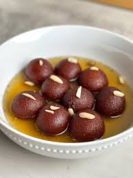

Gulab Jamun
Ingredients
- Oil
- Baking Soda
- Milk
- Flour
- Khoya
- Sugar
Recipe
- Combine sugar and water in a pan and bring to a boil to create the syrup. Remove from heat, add cardamom, and set aside to cool.
- In a mixing bowl, combine flour, paneer, sooji, Nestlé MILKMAID, baking powder, and baking soda. Mix gently to form a soft dough, avoiding over-kneading.
- Divide the dough into 30-35 portions and gently shape them into round balls.
- Heat oil on low flame and fry the balls until they turn golden brown.
- Transfer the fried Gulab Jamuns into the cooled sugar syrup. Once all the Gulab Jamuns are added, bring the syrup to a boil again briefly, then remove from heat.
- Enjoy your homemade Gulab Jamun warm, garnished with your favourite toppings.

Barfi
Ingredients
- ground cardamom
- butter or ghee
- Milk
- vanilla extract
- Khoya
- Sugar
- Saffron, rose buds, and silver leaf
Recipe
- Grease a 9×6 baking pan.
- Heat a heavy bottom pan on medium to low heat. Once hot, add in the butter and 1/2 cup of milk. Let the butter melt.
- Once the butter melts, add in the milk powder stirring constantly. Once the powder is incorporated with milk, gradually add in the powdered sugar.
- If there are bits of dry powder left, add in the three tablespoons of milk. If you need to add more milk, add a tablespoon at a time. At this stage the mixture should have a paste like consistency.
- While continuously stirring, cook the mixture for 8-9 minutes or until it easily leaves the surface of the pan. The mixture should look like a dough.
- Turn the heat off and add vanilla essence, cardamom, and a tablespoon of pistachios. Mix everything well. Spread the mixture evenly on the greased pan and top the remaining tablespoon of pistachios.
- Let the burfi set for at least three hours. Once set, it can be stored in an airtight container at room temperature for up to seven days.